Pick the job, work through its page, check, then run.Выберите задачу, пройдите её страницу, проверьте и только потом
запустите.Виберіть завдання, пройдіть його сторінку, перевірте та лише потім
запустіть.
FileDO GUI is the Windows window for the same FileDO commands. It
opens on a shell: a rail of jobs down the left side and one
numbered page per job - what to work on, which parameters, then
check and run. It does not change safety rules: it makes the
target, the operation, and the command visible before
execution.FileDO GUI - это окно Windows для тех же команд FileDO. По
умолчанию открывается оболочка: слева список задач, а на каждую
задачу - своя пронумерованная страница: над чем работать, какие
параметры, затем проверка и запуск. Окно не меняет правила
безопасности: оно делает цель, операцию и команду видимыми до
запуска.FileDO GUI - це вікно Windows для тих самих команд FileDO. За
замовчуванням відкривається оболонка: ліворуч список завдань, а на
кожне завдання - своя пронумерована сторінка: над чим працювати,
які параметри, потім перевірка та запуск. Вікно не змінює правил
безпеки: воно робить ціль, операцію та команду видимими перед
запуском.
In the window, F1 opens the help of the window you are in; the same help is on this site: window help.В окне F1 открывает справку того окна, в котором вы находитесь; та же справка есть на сайте: справка окна.У вікні F1 відкриває довідку того вікна, у якому ви перебуваєте; та сама довідка є на сайті: довідка вікна.
When to choose the GUIКогда выбрать GUIКоли вибрати GUI
Settings are available in the main window and from the Disk Manager's Settings button. Theme changes apply immediately; language changes apply on reopening. Choose startup at Windows logon: Off, FileDO, Disk Manager or only the tray icon. Startup needs no admin rights; its entry remains after uninstalling. In the Store build, use Windows Settings, Apps - Startup, or Task Manager. A manual launch always shows a window. Minimize to the tray applies to both windows; clicking the icon opens FileDO. Its menu opens the manager and settings, stops a job, unmounts all mounted disks and exits. Exit during a job asks what to do. Finish notifications can be turned off; resetting window positions applies on the next opening.Настройки доступны в главном окне и по кнопке «Настройки» в Диспетчере дисков. Тема применяется сразу, язык - при повторном открытии окна. Выберите запуск при входе в Windows: выключено, FileDO, Диспетчер дисков или только трей. Запуск не требует прав администратора; запись остаётся после удаления программы. В версии Store автозапуск включается в параметрах Windows, «Приложения - Автозагрузка», или Диспетчере задач. Обычный запуск всегда показывает окно. Переключатель «Сворачивать в трей» действует на оба окна; щелчок по значку открывает FileDO. Меню открывает Диспетчер дисков и настройки, останавливает задание, отключает все подключённые диски и завершает программу. При выходе во время задания программа спрашивает, что делать. Уведомление о завершении можно выключить; сброс положения окон действует при следующем открытии.Налаштування доступні в головному вікні та за кнопкою «Налаштування» в Диспетчері дисків. Тема застосовується одразу, мова - під час повторного відкриття вікна. Виберіть запуск під час входу у Windows: вимкнено, FileDO, Диспетчер дисків або лише трей. Запуск не потребує прав адміністратора; запис залишається після видалення програми. У версії Store автозапуск вмикається в параметрах Windows, «Програми - Автозавантаження», або Диспетчері завдань. Звичайний запуск завжди показує вікно. Перемикач «Згортати в трей» діє на обидва вікна; натискання піктограми відкриває FileDO. Меню відкриває Диспетчер дисків і налаштування, зупиняє завдання, відключає всі підключені диски та завершує програму. Під час виходу із завданням програма запитує, що робити. Сповіщення про завершення можна вимкнути; скидання положення вікон діє під час наступного відкриття.
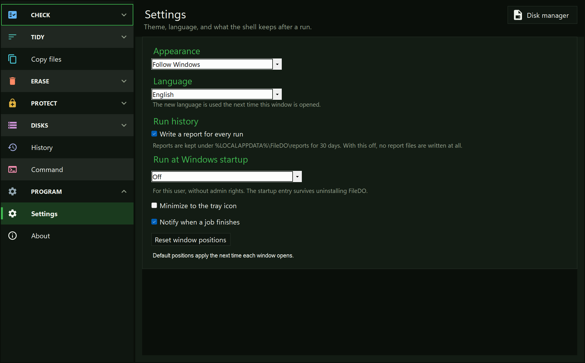
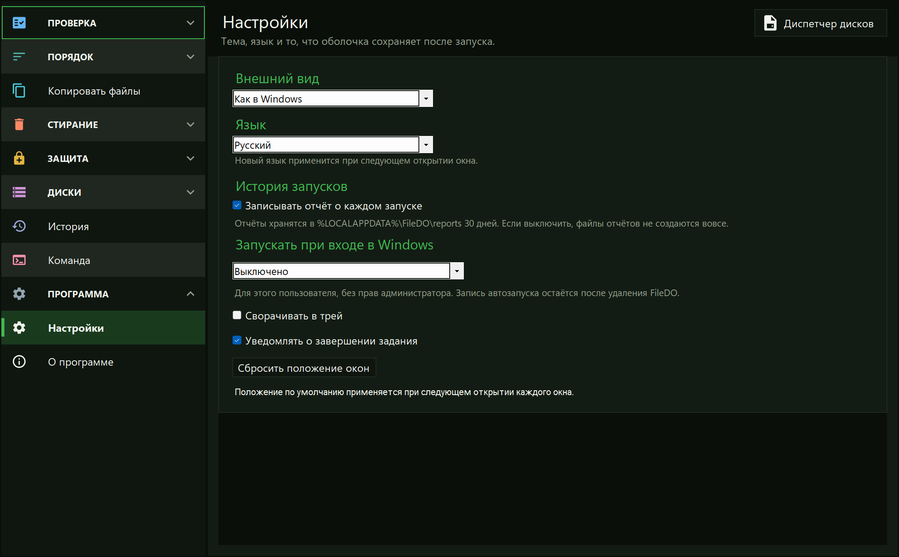
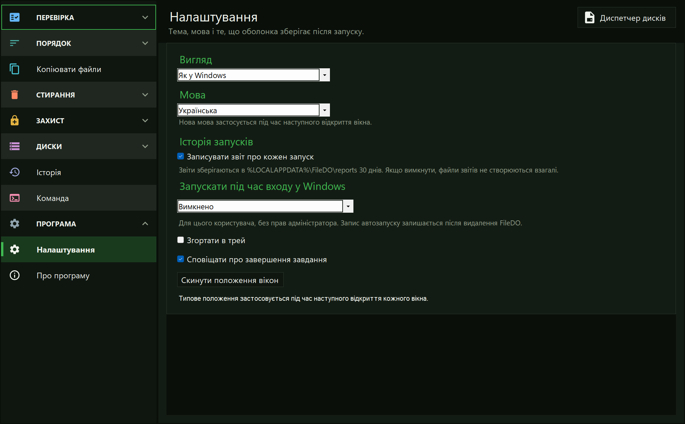
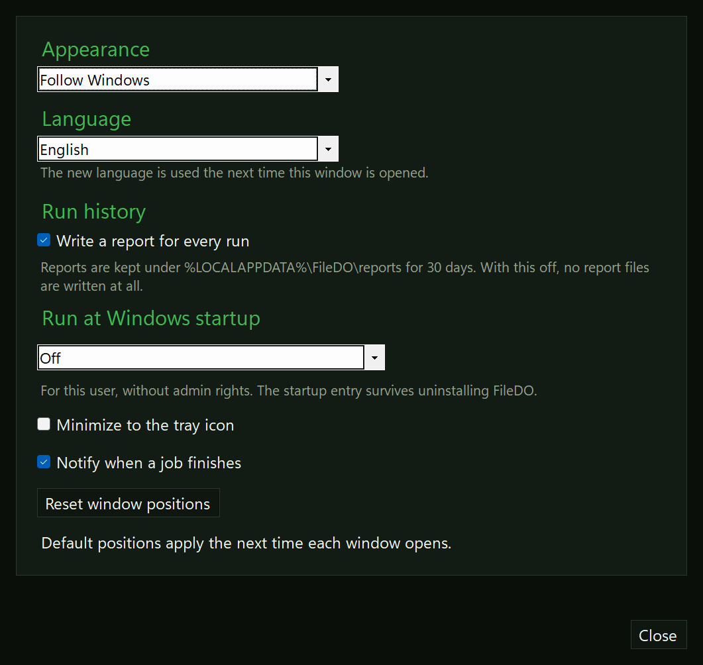
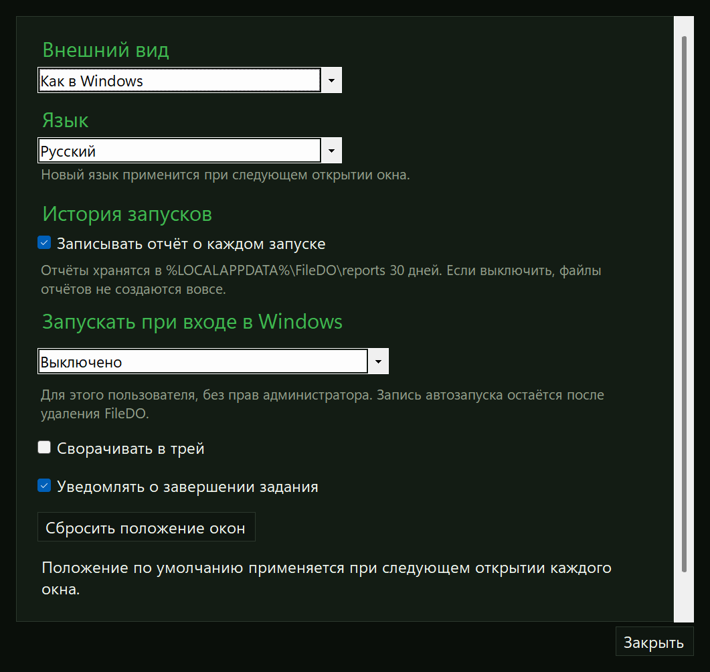
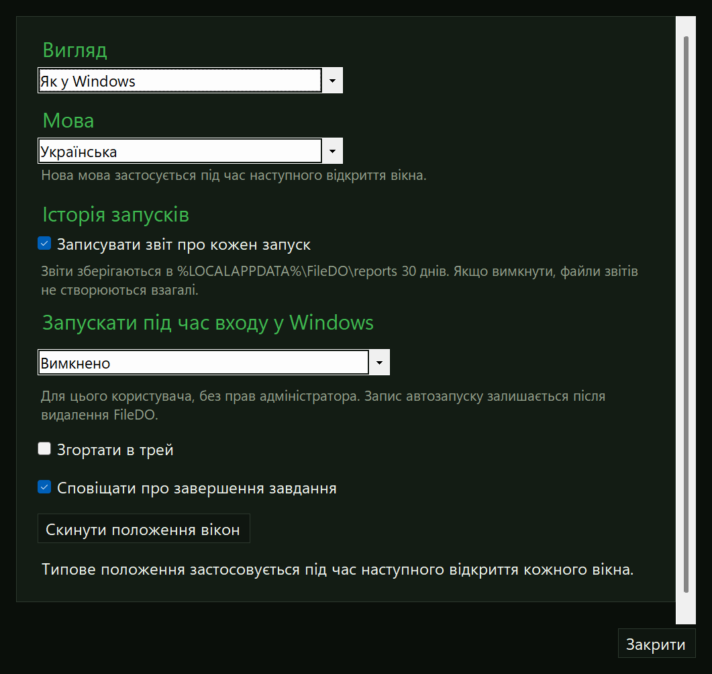
You prefer to pick a jobУдобнее выбрать задачуЗручніше вибрати завдання
Choose the job in the rail and fill in its page instead of
typing every argument.Выберите задачу в списке слева и заполните её страницу вместо
ручного ввода всех аргументов.Виберіть завдання у списку ліворуч і заповніть його сторінку
замість ручного введення всіх аргументів.
You need to verify a pathНужно проверить путьТреба перевірити шлях
Every page starts with what to work on and ends with a check,
so the target is in front of you before you run.Каждая страница начинается с того, над чем работать, и
заканчивается проверкой - цель у вас перед глазами до
запуска.Кожна сторінка починається з того, над чим працювати, і
закінчується перевіркою - ціль перед очима до запуску.
You need a command for an instructionНужна команда для инструкцииПотрібна команда для інструкції
The Command page shows the command line: it can be edited,
copied, or run.Страница «Команда» показывает командную строку: её можно
отредактировать, скопировать в буфер или запустить.Сторінка «Команда» показує командний рядок: його можна
відредагувати, скопіювати або запустити.
Something behaves wronglyЧто-то работает не такЩось працює не так
The About page shows the build, the links, and a Send logs to
the author button (in the older window, the About button in the
top right): the logs are
packed into one zip, the folder opens with it selected, the path
goes to the clipboard, and your mail program opens with the
author's address and a subject. Attaching the archive and sending
the mail is your step - FileDO itself transmits nothing.Страница «О программе» показывает версию, ссылки и кнопку
«Отправить логи автору» (в старом окне это кнопка «О программе»
справа сверху): логи собираются в
один zip, папка с ним открывается, путь копируется в буфер
обмена, а ваша почтовая программа открывается с адресом автора и
темой. Приложить архив и отправить письмо - ваш шаг: сам FileDO
ничего никуда не передаёт.Сторінка «Про програму» показує версію, посилання та кнопку
«Надіслати логи автору» (у старому вікні це кнопка «Про
програму» праворуч угорі): логи збираються в
один zip, тека з ним відкривається, шлях копіюється в буфер
обміну, а ваша поштова програма відкривається з адресою автора та
темою. Прикласти архів і надіслати лист - ваш крок: сам FileDO
нічого нікуди не передає.
First safe runПервый безопасный запускПерший безпечний запуск
Start filedo_win from the winget/Store package, or
filedo_win.exe beside filedo.exe in the
portable ZIP. The shell opens with the rail of jobs on the
left.Запустите filedo_win из winget/Store-пакета либо
filedo_win.exe рядом с filedo.exe в
portable ZIP. Откроется оболочка со списком задач слева.Запустіть filedo_win із пакета winget/Store або
filedo_win.exe поруч із filedo.exe у
portable ZIP. Відкриється оболонка зі списком завдань
ліворуч.
For a first check, choose Target info and set what to work
on.Для первой проверки выберите «Информация о цели» и укажите, над
чем работать.Для першої перевірки виберіть «Інформація про ціль» і вкажіть,
над чим працювати.
Read the Check and run step, then run it. Target info only shows
information.Прочитайте шаг «Проверить и запустить», затем запустите. Задача
«Информация о цели» только показывает сведения.Прочитайте крок «Перевірити та запустити», потім запустіть.
Завдання «Інформація про ціль» лише показує відомості.
filedo_win
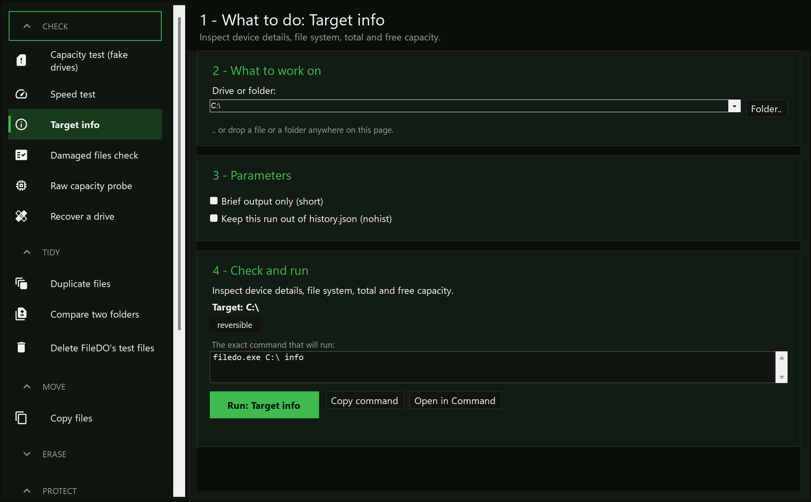
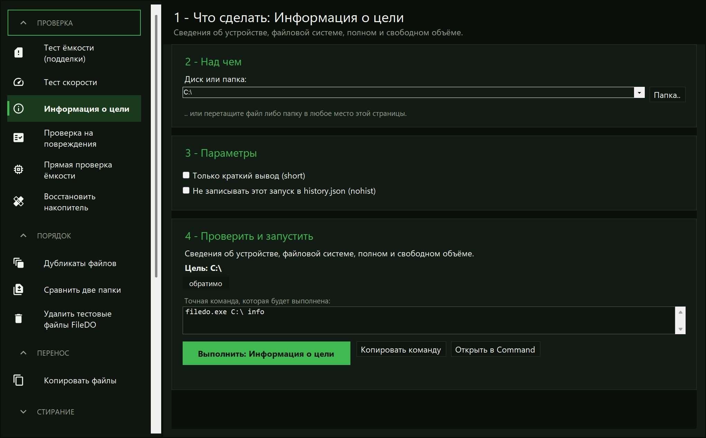
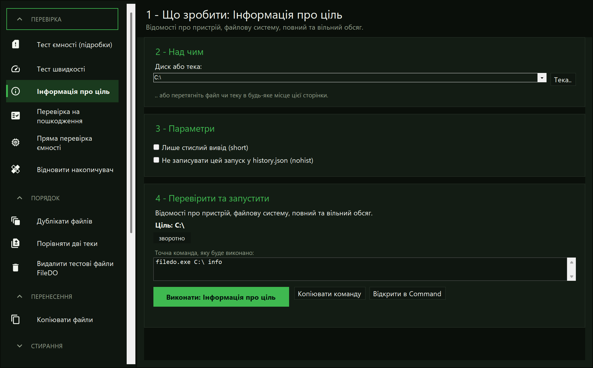
Target info: step 4 shows the target and the exact command before
anything runs.«Информация о цели»: шаг 4 показывает цель и точную команду до
запуска.«Інформація про ціль»: крок 4 показує ціль і точну команду до
запуску.
What the window exposesЧто показывает окноЩо показує вікно
The rail lists the jobs, and each job opens one numbered page: what
to work on, which parameters, then check and run. There are pages
for a capacity test, a speed test, target info, a damaged-files
check, a raw capacity probe, recovering a drive, duplicate files,
comparing two folders, filling the free space, copying files, and
wiping a folder; the Protect pages, the Disks pages, History, Settings,
and About sit
beside them. Every option the CLI takes for a job is on its
page.Список слева перечисляет задачи, и каждая задача открывает одну
пронумерованную страницу: над чем работать, какие параметры, затем
проверка и запуск. Есть страницы для теста ёмкости, теста
скорости, сведений о цели, проверки повреждённых файлов, прямой
проверки ёмкости, восстановления накопителя, дубликатов, сравнения
двух папок, заполнения свободного места, копирования файлов и
затирания папки; рядом - страницы защиты, страницы дисков, «История», «Настройки» и
«О программе». Все параметры, которые CLI принимает для задачи,
есть на её странице.Список ліворуч перелічує завдання, і кожне завдання відкриває одну
пронумеровану сторінку: над чим працювати, які параметри, потім
перевірка та запуск. Є сторінки для тесту ємності, тесту швидкості,
відомостей про ціль, перевірки пошкоджених файлів, прямої перевірки
ємності, відновлення накопичувача, дублікатів, порівняння двох тек,
заповнення вільного місця, копіювання файлів і затирання теки;
поруч - сторінки захисту, сторінки дисків, «Історія», «Налаштування» та «Про
програму». Усі параметри, які CLI приймає для завдання, є на його
сторінці.
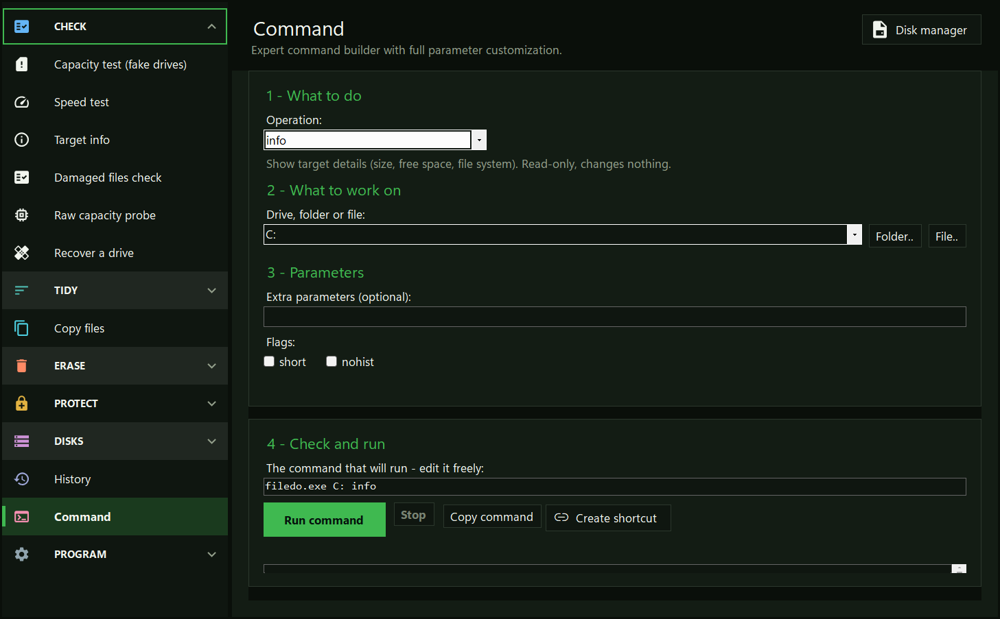
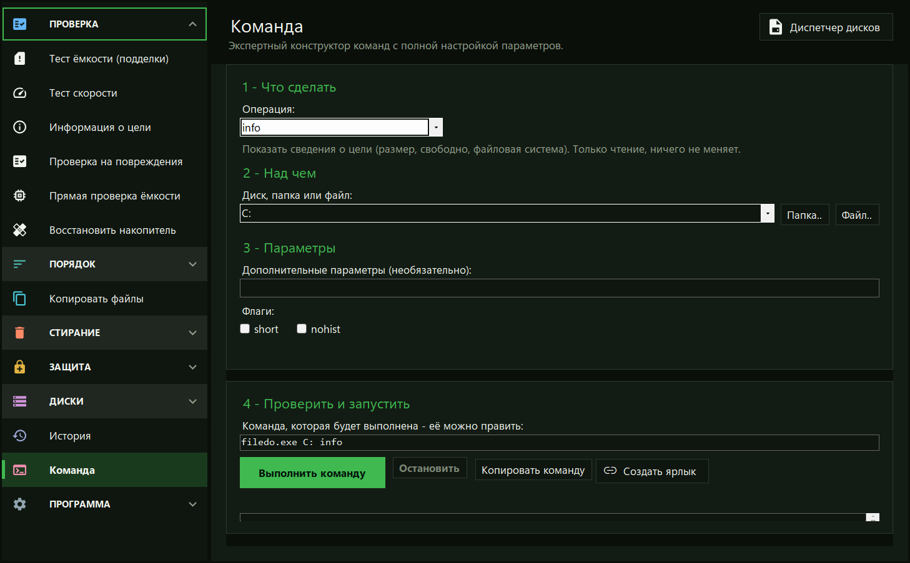
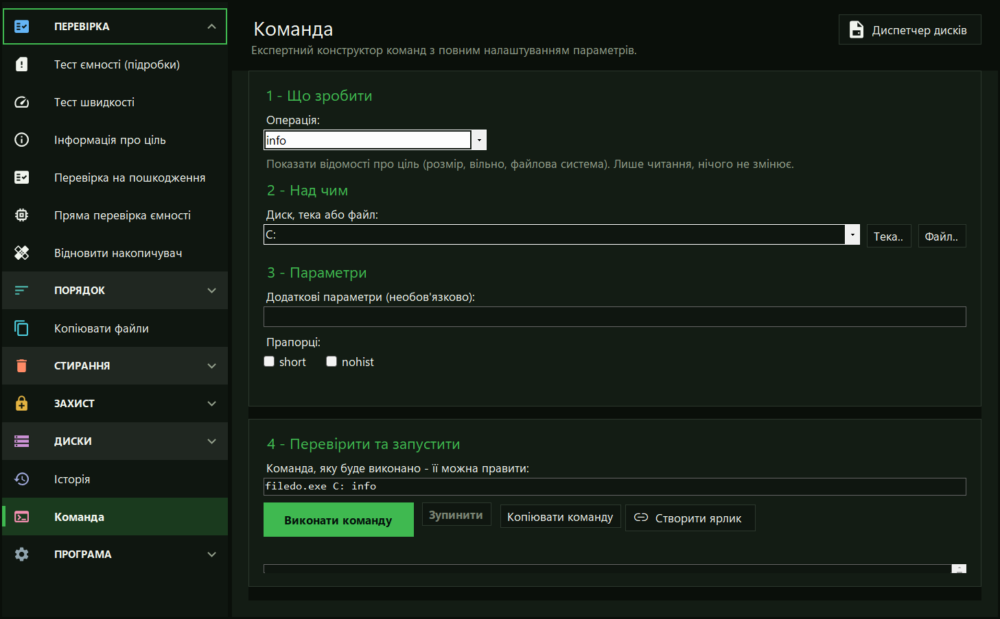
The Command page: operation, target, flags, and the command line
itself, editable.Страница «Команда»: операция, цель, флаги и сама командная строка,
которую можно править.Сторінка «Команда»: операція, ціль, прапорці й сам командний
рядок, який можна редагувати.
The Command pageСтраница «Команда»Сторінка «Команда»
The expert builder: every operation filedo.exe
takes, with the flags and rule pickers that belong to the one
you choose, and the command line itself editable underneath.
Read it, edit it by hand, copy it, or run it.Экспертный конструктор: все операции, которые принимает
filedo.exe, с флагами и выбором правил, относящимися
к выбранной операции, и самой командной строкой, которую можно
править внизу. Прочитайте её, отредактируйте вручную, скопируйте
или запустите.Експертний конструктор: усі операції, які приймає
filedo.exe, із прапорцями та вибором правил, що
стосуються вибраної операції, і самим командним рядком, який
можна редагувати внизу. Прочитайте його, відредагуйте вручну,
скопіюйте або запустіть.
Create shortcut saves this line on your desktop. Double-click
it to run the command in a console; the default checkbox keeps
the window open so you can read the result. A shortcut stores
its arguments, so a line containing a p: password
or pe:FILEDO_SHELL_CRED cannot be saved. Remove
that argument and enter the password in the console.Кнопка «Создать ярлык» сохраняет эту строку на рабочем столе.
Двойной щелчок запускает её в консоли; флажок по умолчанию
оставляет окно открытым, чтобы прочитать результат. Ярлык хранит
аргументы, поэтому строку с паролем p: или
pe:FILEDO_SHELL_CRED сохранить нельзя: уберите
такой аргумент и введите пароль в консоли.Кнопка «Створити ярлик» зберігає цей рядок на робочому столі.
Подвійне клацання запускає команду в консолі; позначений за
замовчуванням прапорець залишає вікно відкритим для читання
результату. Ярлик зберігає аргументи, тому рядок із паролем
p: або pe:FILEDO_SHELL_CRED зберегти
не можна: приберіть цей аргумент і введіть пароль у консолі.
Operations that need a password get a masked field of their own
here, and secure asks twice. The password never
enters the command line: the line carries only
pe:FILEDO_SHELL_CRED, the name of the variable that
passes it to the run. A secure that deletes or
overwrites the original also needs -y from here;
without it the original is kept and the run says so.Операции, которым нужен пароль, получают здесь отдельное
скрытое поле, а secure спрашивает его дважды.
Пароль не попадает в командную строку: в ней только
pe:FILEDO_SHELL_CRED - имя переменной, через
которую он передаётся запуску. secure, который
удаляет или перезаписывает оригинал, отсюда требует ещё и
-y; без него оригинал сохраняется, и запуск об этом
сообщает.Операції, яким потрібен пароль, отримують тут окреме приховане
поле, а secure питає його двічі. Пароль не потрапляє
в командний рядок: у ньому лише
pe:FILEDO_SHELL_CRED - ім’я змінної, через яку він
передається запуску. secure, що видаляє або
перезаписує оригінал, звідси потребує ще й -y; без
нього оригінал зберігається, і запуск про це повідомляє.
The Protect pagesСтраницы «Защита»Сторінки «Захист»
Three pages make a file secret, get the original back, and open
a secret file without unpacking it. The password is masked and
typed twice when packing; an empty password is accepted and
means obfuscation only, with no secrecy.Три страницы: сделать файл секретным, вернуть оригинал и
открыть секретный файл, не распаковывая его. Пароль скрыт и при
упаковке вводится дважды; пустой пароль принимается и означает
лишь маскировку, без секретности.Три сторінки: зробити файл секретним, повернути оригінал і
відкрити секретний файл, не розпаковуючи його. Пароль приховано,
і під час пакування його вводять двічі; порожній пароль
приймається й означає лише маскування, без секретності.
What happens to the original is chosen before anything runs:
keep (the default), delete, or overwrite then delete. Only the
last one asks you to type WIPE. Opening a container
starts a run that lasts exactly as long as the plaintext copy
exists; the Remove the copy now button ends it.Что будет с оригиналом, выбирается до запуска: оставить (по
умолчанию), удалить или перезаписать и удалить. Только последний
вариант требует набрать WIPE. Открытие контейнера
запускает работу, которая длится ровно столько, сколько
существует открытая копия; кнопка «Убрать копию сейчас» её
завершает.Що буде з оригіналом, вибирається до запуску: залишити (за
замовчуванням), видалити або перезаписати й видалити. Лише
останній варіант вимагає набрати WIPE. Відкриття
контейнера запускає роботу, яка триває рівно стільки, скільки
існує відкрита копія; кнопка «Прибрати копію зараз» її
завершує.
Seventeen pages for the .fdd virtual disks: the list
of what is mounted, create, mount, unmount, info, verify, export
an image and the other operations. Each page says whether the
container is obfuscated or encrypted before anything runs; the
password is masked and never reaches a command line. A mounted
disk stays mounted when the window closes. The first row of the group
opens the Disk manager, a second window that lists every disk in
one place.
The virtual disks guide.Семнадцать страниц для виртуальных дисков .fdd:
список подключённого, создать, подключить, отключить, сведения,
прочитать целиком, выгрузить образ и остальные операции.
Каждая страница говорит, замаскирован контейнер или зашифрован,
до того как что-то запустится; пароль скрыт и в командную строку
не попадает. Подключённый диск остаётся и после закрытия окна. Первая
строка группы открывает Диспетчер дисков - второе окно, которое
показывает все диски одним списком.
Руководство по виртуальным
дискам.Сімнадцять сторінок для віртуальних дисків .fdd:
список підключеного, створити, підключити, відключити,
відомості, прочитати цілком, вивантажити образ та інші операції.
Кожна сторінка каже, замаскований контейнер чи зашифрований, ще
до запуску; пароль приховано, і до командного рядка він не
потрапляє. Підключений диск лишається й після закриття вікна. Перший
рядок групи відкриває Диспетчер дисків - друге вікно, що
показує всі диски одним списком.
Посібник з віртуальних
дисків.
Same responsibilityТа же ответственностьТа сама відповідальність
The GUI does not make wipe, fill … del,
or deletion modes reversible. Check the target and the command
before you run; back up before irreversible actions. Raw capacity
probe and Recover a drive are marked destructive and ask for
Administrator; Wipe a folder still needs WIPE typed
out and -y ticked, and sends a drive root, a share or TEMP to the
console.GUI не делает wipe, fill … del или
режимы удаления обратимыми. Перед запуском проверьте цель и
команду; для необратимых действий сделайте резервную копию.
«Прямая проверка ёмкости» и «Восстановить накопитель» помечены
как разрушающие и просят права администратора; «Очистить папку»
по-прежнему требует набрать WIPE и отметить -y, а
корень диска, общую папку или TEMP отправляет в консоль.GUI не робить wipe, fill … del або
режими видалення зворотними. Перед запуском перевірте ціль і
команду; перед незворотними діями зробіть резервну копію. «Пряма
перевірка ємності» та «Відновити накопичувач» позначені як
руйнівні й просять права адміністратора; «Очистити теку»
як і раніше вимагає набрати WIPE і позначити -y, а
корінь диска, спільну теку чи TEMP відправляє в консоль.
Ways to start the windowКак запустить окноЯк запустити вікно
On a fileНа файлеНа файлі
A double-click on a .fd-sec file opens the window
on that container. From a command line, the same thing is
filedo_win.exe C:\a\secret.fd-sec. Each container
gets its own window.Двойной щелчок по файлу .fd-sec открывает окно
прямо на этом контейнере. Из командной строки то же самое даёт
filedo_win.exe C:\a\secret.fd-sec. Каждый
контейнер получает своё окно.Подвійний клік по файлу .fd-sec відкриває вікно
прямо на цьому контейнері. З командного рядка те саме дає
filedo_win.exe C:\a\secret.fd-sec. Кожен контейнер
отримує своє вікно.
With a debug logС журналом отладкиІз журналом налагодження
The window always writes its errors to
%LOCALAPPDATA%\FileDO\filedo_win.session-*.log - that file goes into the zip that the
Send logs to the author button builds. The -debug switch
adds detailed lines to it.Окно всегда записывает свои ошибки в
%LOCALAPPDATA%\FileDO\filedo_win.session-*.log - этот файл
входит в архив, который собирает кнопка «Отправить логи автору». Переключатель
-debug добавляет туда подробные строки.Вікно завжди записує свої помилки в
%LOCALAPPDATA%\FileDO\filedo_win.session-*.log - саме цей
файл потрапляє в архів, який збирає кнопка «Надіслати логи автору». Перемикач
-debug додає туди докладні рядки.